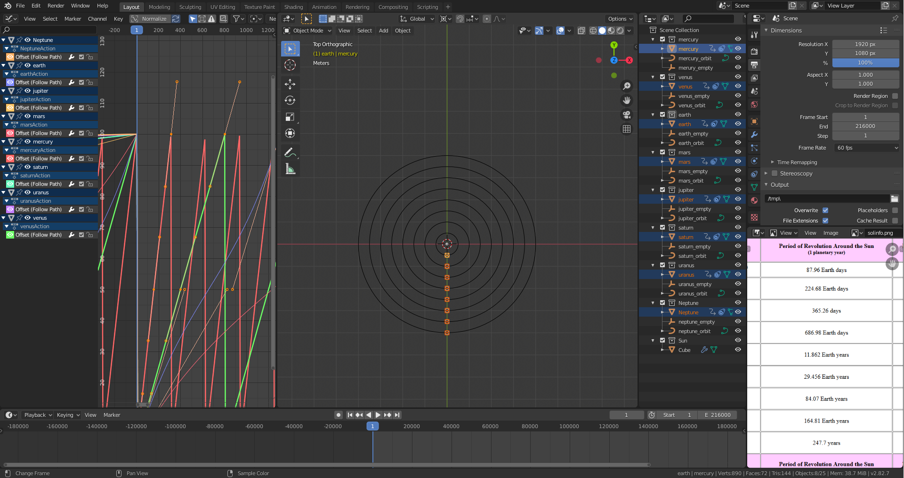

Born and raised in the UK 'til I was 9 years old, when my parents and I moved out to France. I spent the best part of 11 years there. Growing up and schooling in the coutryside, oddly, put me very much in touch with technolgy. Other than rolling hay bales down hills and splashing around in rivers, there ain't much else to do. Don't get me wrong, I do love being out in nature, I couldn't get enough my Playstation. Being there for 11 years in a tight knit community I learnt a thing or two like; fluency in French; how not to flirt; red wine with cheese and meats, not for fun; and a vivid imagination.
My Background
In France I studied Architecture which is, to this day, the most boring thing on planet earth. From there I developed a fascination with computers and heavy metal. Some very tragic events occured, and I was out on the streets. But using my firey passion for technology and music I started clawing my way out of homelessness and onto the stage. Before COVID-19 struck, I was being considered for an apprenticeship at UK Riggers, the nations greatest live events rigging suppliers.
My Interests
Aside from loving video games since I was a child, the entire reason I went into architecture was it was the only option available to me to tap into my creative side... It very nearly killed it. Then I discovered Blender aged 18, fell in love and I am still learning it to this day. Homelessness really prevented me from picking it up frequently enough to make good by it, but I won't stop trying. Amongst other lesser interests such as terrariums, biology, and food, the subjects I wish to study are Engineering, Psychology and Astronomy. Broad spectrum, I know, but I can't help but love it. Below is a WIP of our solar system, with accurate orbital periods around our sun.

My Interests In Technology and Coding
Technologically speaking, computer hardware and physics simulations are a special interest of mine. Combined with a love of the stars, automated gimbals on telescopes designed to track stars and other astral bodies from the surface of the earth are particularly interesting. But more gratuitously and less scientifically charged, I like making things move in a 3D environment. This is facilitated by programming languages such as C and Python (in the case of Blender and many other graphics softwares).
Why Did I Join Code Nation?
Due to the recent implosion of my career, and having received no financial support fom the government, I applied for Universal Credit. They asked me if I liked computers, my DNA screamed yes! and I was introduced to Ezra. We discussed some of the things that we would study and the moment he mentioned Python and C, I asked for the application form. Now I'm excited to see how I can work alongside Code Nation and hopefully steer my life into a more progressive path.